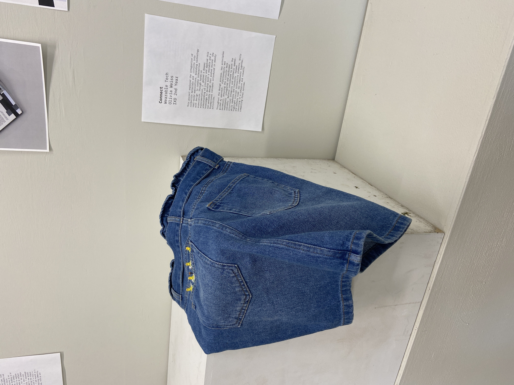

Connect: Circuits and Interactions
Overview
This project explored the integration of conductive materials and circuits into real-world applications. Through hands-on experimentation, I developed a deeper understanding of circuits and applied them to create a wearable design that pushes beyond the concepts learned in weekly activities.
Throughout the design process, key principles guided my work. Functionality ensured that the circuits were integrated and performed reliably. Balance contributed to both the visual and structural stability of our designs, while emphasis and hierarchy helped highlight important interactive elements. Lastly, unity and harmony brought all elements together into a cohesive and visually compelling outcome.
What
A wearable design project that integrates conductive materials and circuits into fabric, creating an interactive embroidered skirt that responds to user interaction through embedded electronics.
Who
Designed for audiences interested in the intersection of fashion, technology, and interaction design, demonstrating how circuits can be seamlessly woven into wearable art and functional garments.
Why
To explore how conductive materials can enhance wearables through interactivity, pushing the boundaries of traditional garment design while maintaining aesthetic quality and functional performance.
Problem / Opportunity
Traditional garments are static. This project investigates how embedding circuits and conductive materials into fabric can create wearables that respond to user interaction, adding a layer of interactivity to fashion design.
The challenge was to integrate technology invisibly, making the circuits functional while maintaining the aesthetic and structural integrity of the garment through precise embroidery techniques.

Key Features
Interactivity
Circuits respond seamlessly to user interaction, creating an engaging and responsive wearable experience.
Material Integration
Conductive thread and fabric were embedded so subtly that they become invisible within the design, maintaining aesthetic integrity.
Precision Embroidery
Precise stitching elevated both the craftsmanship and the visual appeal, reinforcing the design without revealing the circuitry.
Unity & Harmony
All elements (functionality, balance, emphasis, and hierarchy) work together to create a cohesive and visually compelling outcome.
Process and Exploration

Research into connecting circuits

Further development of circuit integration. Sketches and physical prototypes

Inital design for the embroidered pattern

Embroidery layout
Final embroidery integration

Embroidered skirt selected for exhibition in the Sheridan gallery